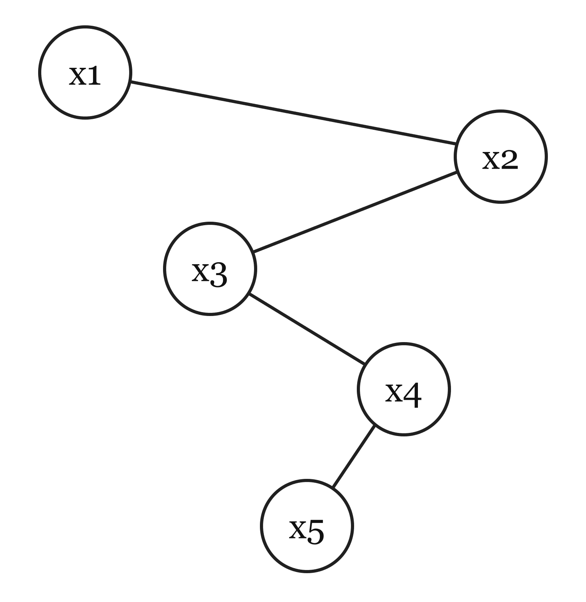

数据结构
2018-06
树形查找已知二叉排序树如下图所示，元素之间应满足的大小关系是__。

答案
6
答案：C
本题讲解：二叉排序树的中序定序法
答案：C。
第一步：先立机制——为什么 BST 一"中序"就升序
二叉排序树的性质是子树级的：任取一个结点，其左子树里的所有结点都比它小，右子树里的所有结点都比它大。中序遍历按"左子树 → 根 → 右子树"访问，于是每个结点被输出时，比它小的已经全部输出完，比它大的还一个没出——这条性质对每个子树递归成立，整串输出必然严格递增。所以本题的钥匙不是逐对比较大小，而是把图读成树形，走一遍中序，全序到手，再拿四个选项来对号。
第二步：从图中读出树形
图上 5 个结点连成一条之字形链，父子与左右由位置判定：x1 位置最高是根；x2 在 x1 右下方，是 x1 的右孩子；x3 在 x2 左下方，是 x2 的左孩子；x4 在 x3 右下方，是 x3 的右孩子；x5 在 x4 左下方，是 x4 的左孩子。
第三步：走一遍中序，序列自然展开
- 访问 x1：它没有左子树，直接输出 x1；
- 进入右子树 x2：x2 有左子树（x3 一支），必须先把它处理完；
- x3 无左孩子，输出 x3，再进它的右子树 x4；x4 有左孩子 x5，按"左→根→右"先输出 x5、再输出 x4；
- 回到 x2 输出，x2 无右孩子，结束。
中序序列为 x1, x3, x5, x4, x2，即 x1 < x3 < x5 < x4 < x2。
第四步：选项对号入座
| 选项 | 断言 | 用全序检验 |
|---|---|---|
| A | x1 < x2 < x5 | x5 在 x2 的左子树内，必有 x5 < x2，错 |
| B | x1 < x4 < x5 | x5 是 x4 的左孩子，必有 x5 < x4，错 |
| C | x3 < x5 < x4 | 与全序一致，对 |
| D | x4 < x3 < x5 | x4 在 x3 的右子树内，必有 x3 < x4，错 |
易错点
- 只比较直接父子：祖先—后代之间没有边直接相连，但子树性质照样管用——x5 在 x2 的子树里就必小于 x2；选项 A 正是漏了这一层。
- 左右孩子凭上下位置猜：左右由横向位置决定（x3 在 x2 左侧就是左孩子），"画得靠下"不等于"是右孩子"。
- 跳过中序逐对猜：先写出完整中序，再逐条核对，每条断言都有全序兜底，不会漏判。
一句话：BST 中序即升序，本树中序为 x1 < x3 < x5 < x4 < x2，唯一正确的断言是 C。